Updates
Frost Flute Studio: Festival Miami
November 2016
My flute studio was invited by our head dean to perform in Festival Miami, which is a three week music festival filled with performances by students and guests almost every night.
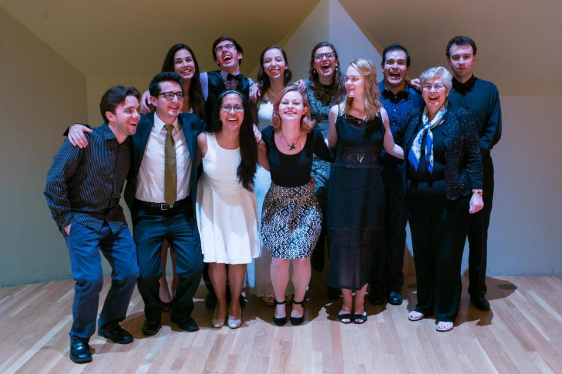Frost Flute Studio: Chicago
December 2016
Our flute studio traveled to the Midwest Band Clinic in Chicago to perform at the convention.
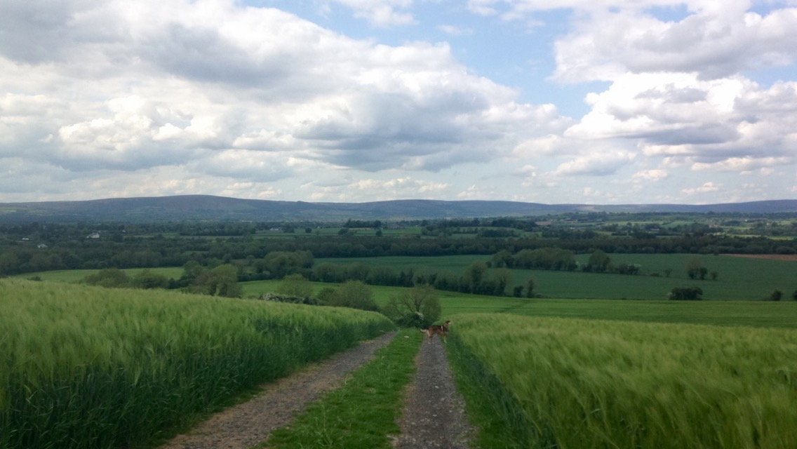 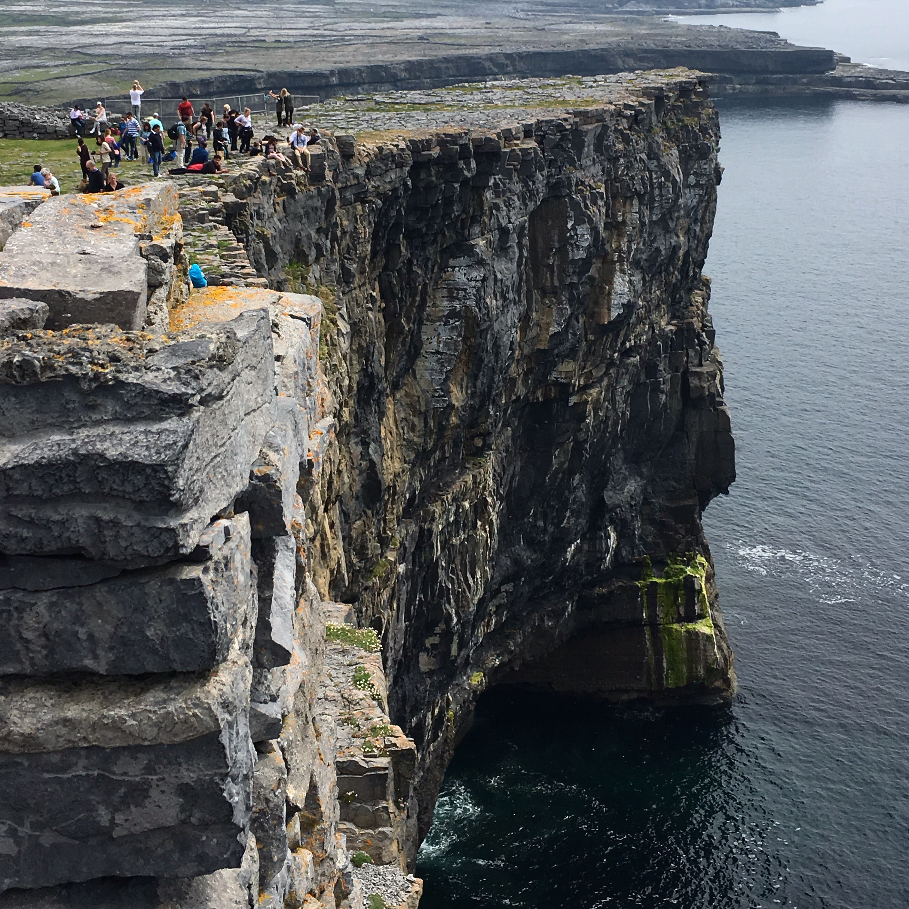
Frost Flute Studio: American Recital
November 2016
Every year my flute studio performs in a studio recital. There is always a theme of sorts; last year it was the Bach sonatas, and this year Professor Trudy decided on French music. French music- my absolute FAVORITE! I had no trouble selecting my piece- Philippe Gaubert's Troisieme Sonate. Performing for everyone was such fun, and I loved hearing my fellow studio flutists. Pictured below is my entire studio after all of our performances.
Miami Summer Music Festival: Opera Institute
July 2016
I was unexpectedly offered the opportunity to participate in Miami Music Festival's Opera Institute. The pit orchestra needed a flute position filled as soon as possible -the opera performances would begin in four days- so I made the trip down to Miami for one crazy week of rehearsals and concerts. Th program included the absolutely timeless La Bohème by Giacomo Puccini, Marcel Ravel's whimsical L'enfant et les sortilèges and the comedy Gianni Schicchi, also composed by Puccini. I had an unforgettable time making music with the cast and orchestra- they were all so kind and dedicated, and it was such a pleasure working with them all.
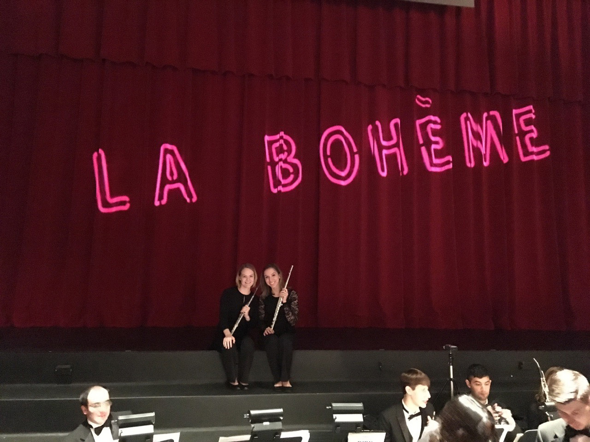Flute Workshop: Anatomy of Sound
June 2016
I attended Amy Porter's Anatomy of Sound workshop in Ann Arbor, Michigan. Something really special about this workshop was its focus on body awareness! Not only did I have the opportunity to perform in traditional masterclasses for Mark Sparks and Amy Porter, but I also had Laura Dwyer for yoga instruction and Jerry Schwiebert for body awareness and tension reduction. This workshop introduces a holistic approach to playing the flute, which is exactly what I needed. It was also a lovely time collaborating with pianist Tim Carey.
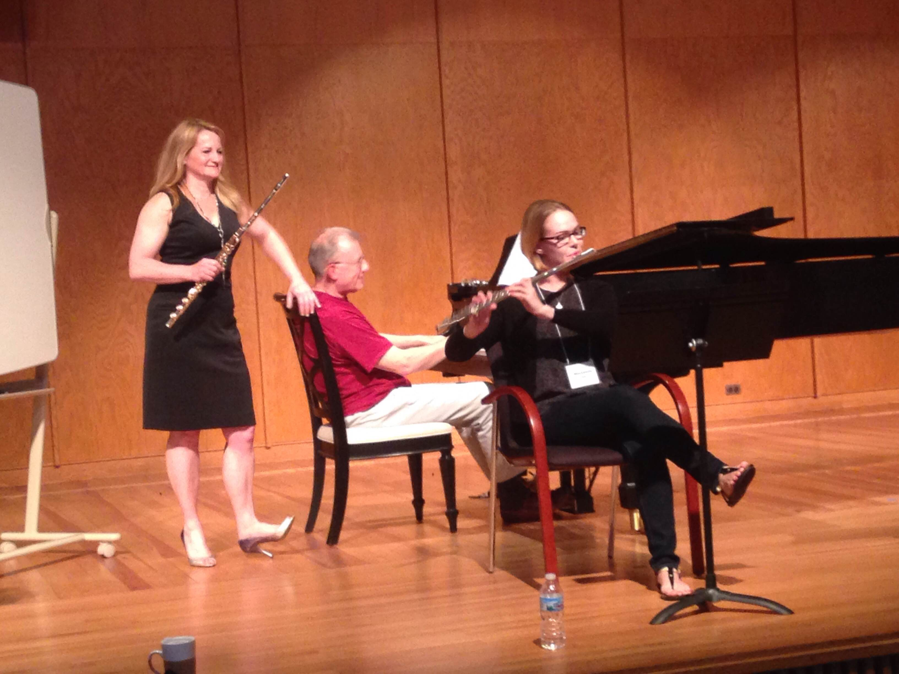Family Trip: Ireland
May 2016
I had the opportunity to travel back to Ireland with my mom to visit family and fit in some sightseeing! We spent a wonderful day in Laoise with family- the beautiful rolling hills pictured below are from their farm. Other destinations included Galway, Dublin, Blarney Castle, Kilarney, Kerry, Cliffs of Moher, Bunratty Castle, and the Aran Islands (pictured below). I hope to return to Ireland again sometime in the near future! A special thanks to my parents for making this trip happen for me.
Frost Flute Studio: New York
April 2016
Memories I will NEVER forget, and that I will ALWAYS treasure! My flute studio at the University of Miami was invited to perform in the New York flute fair. As a studio we performed Trudy Kane's transcription of the second movement from La Boheme. While in the city, we also saw a performance of Donizetti's L'elisir d'amore by the Metropolitan Opera and fit in a tour of the Metropolitan Museum (pictured below). Also pictured below is a picture of my entire studio in Lincoln Center. My professor, Trudy Kane, is the reason this all happened! The experiences and opportunities she presents us with are absolutely incredible, and I am so fortunate to get to study with her!
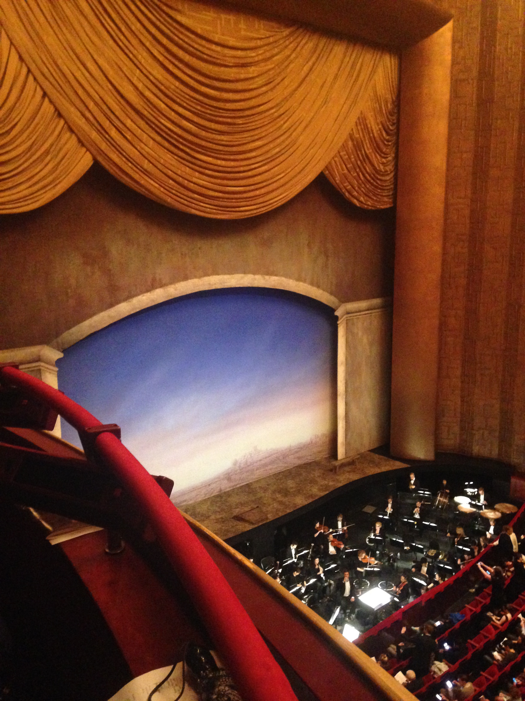 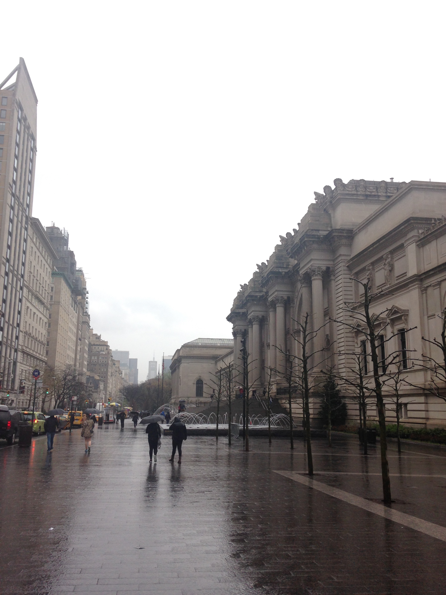 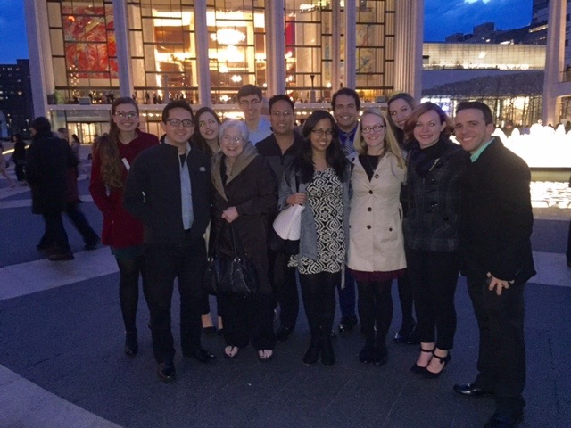Frost Flute Studio: Masterclass
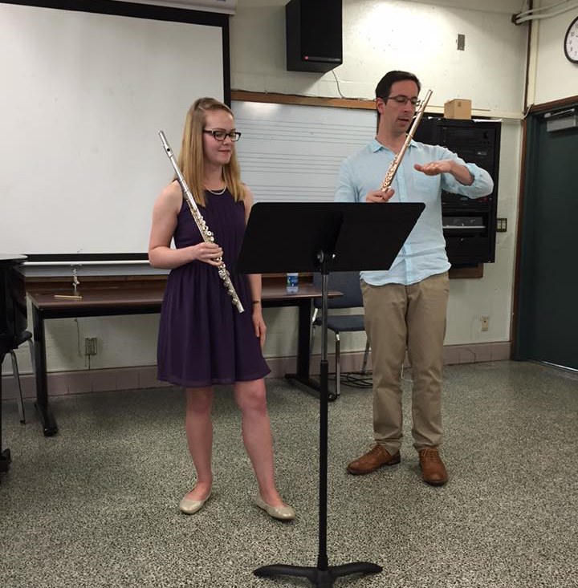March 2016
I had the opportunity to perform in a masterclass for Aaron Goldman while he was in Miami. It was such fun for all of us in the studio to perform and hear each other perform as well! I performed the first movement from Carl Reinecke's "Undine" Sonata. Mr. Goldman was such a fabulous performer AND teacher- I left feeling very inspired. One of many great opportunities our professor arranges for our studio every year! The masterclass took place during woodwind forum, which meant that the other woodwind studios could observe and learn from Mr. Goldman as well.
Frost Flute Studio: French Recital
November 2015
Every year my flute studio performs in a studio recital. There is always a theme of sorts; last year it was the Bach sonatas, and this year Professor Trudy decided on French music. French music- my absolute FAVORITE! I had no trouble selecting my piece- Philippe Gaubert's Troisieme Sonate. Performing for everyone was such fun, and I loved hearing my fellow studio flutists. Pictured below is my entire studio after all of our performances.
Flute Workshop: Aria International Academy
July 2015
My second adventure this summer was to the lovely town of South Hadley, Massachusetts. Aria International Summer Academy is held every year at Mount Holyoke College. This was an intensive workshop where I gained insight from my instructors and fellow peers on anything ranging from technique to practicing to career advice. I performed in masterclasses and received private instruction from Bonita Boyd, Christina Jennings, and Linda Toote. Such a special experience with excellent teachers and friends.
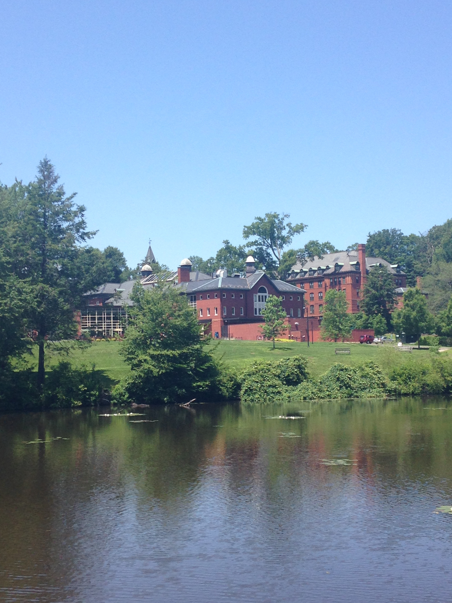 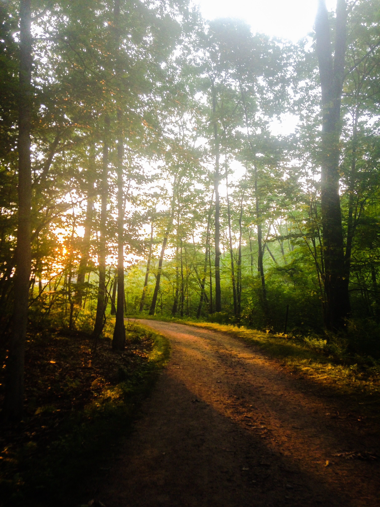 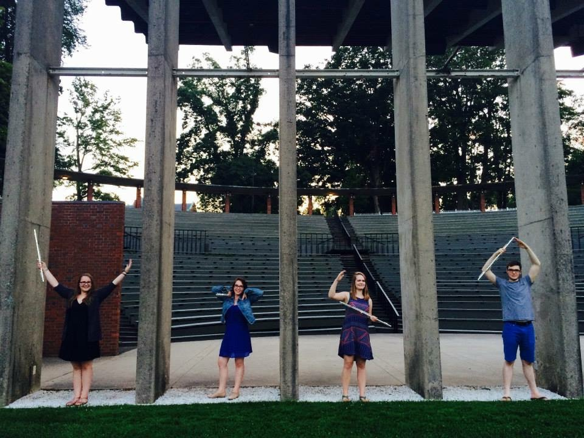Family Trip: North Carolina
June 2015
My family decided to return back to a previous vacation spot, a cabin in Waynesville, North Carolina. I felt like I was in a treehouse tucked away in the mountains! It was such a peaceful and relaxing retreat. The porch out front was the perfect practice spot for me (and the dog)! Sometimes it sounded like I was playing duets with the birds in the trees.
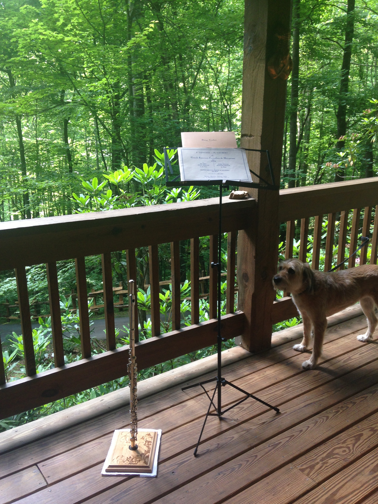 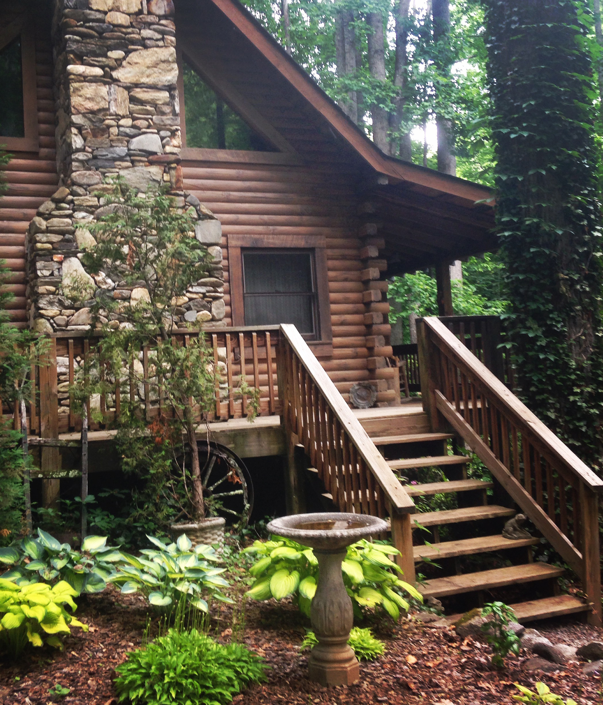Flute Workshop: Panoramic Flutist
May 2015
My summer started off with a trip to Boulder, Colorado, for The Panoramic Flutist. Hosted by CU Boulder professor Christina Jennings and her studio, this workshop included recitals, masterclasses, instruction on movement and yoga, and hikes. I had never attended a flute workshop before this, and Panormaic was the perfect introduction for me- friendly participants and teachers in a positive, judge-free zone. I performed in masterclasses for Christina Jennings and Paula Robison, and also experienced classes taught by Dr. Lisa Garner Santa and Jennifer Keeney.
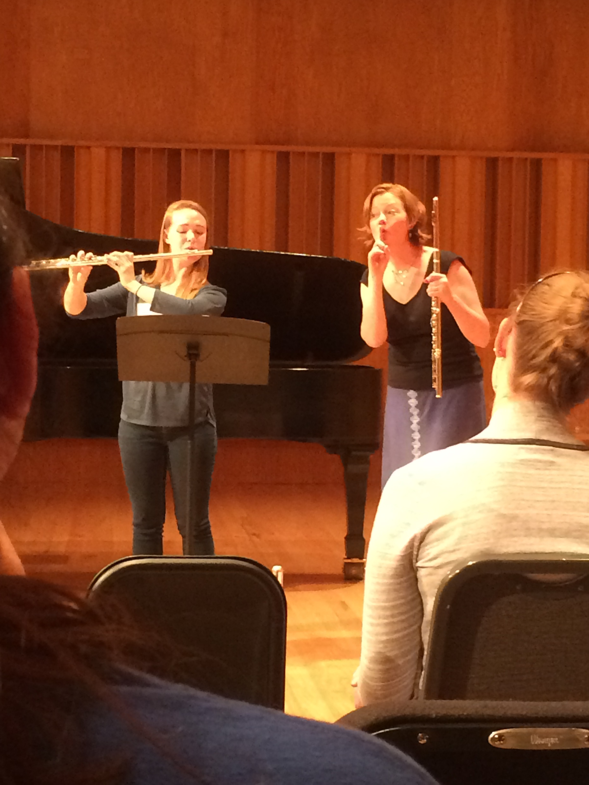 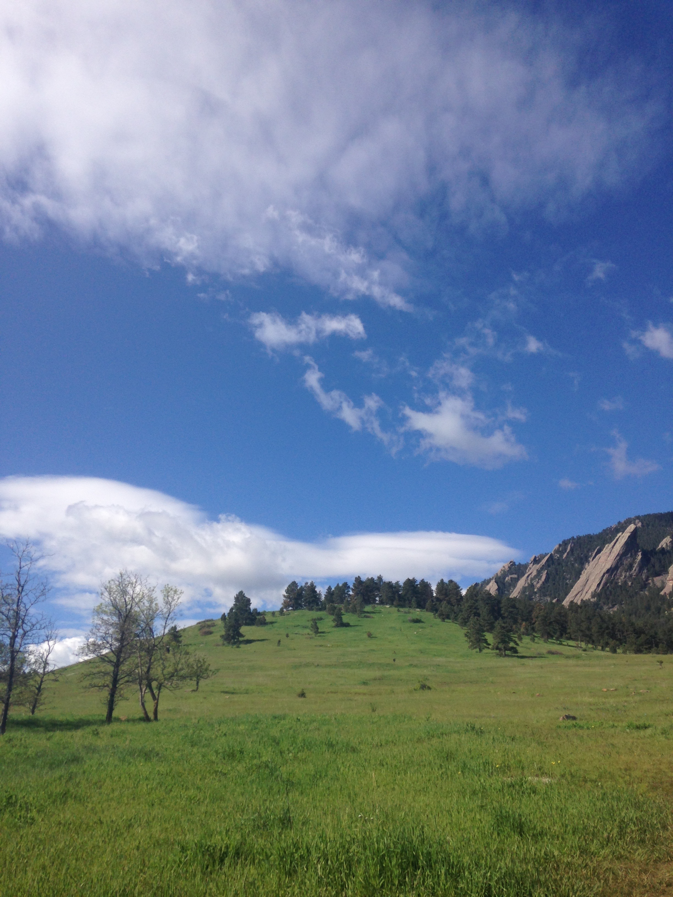Frost Flute Studio: Masterclass
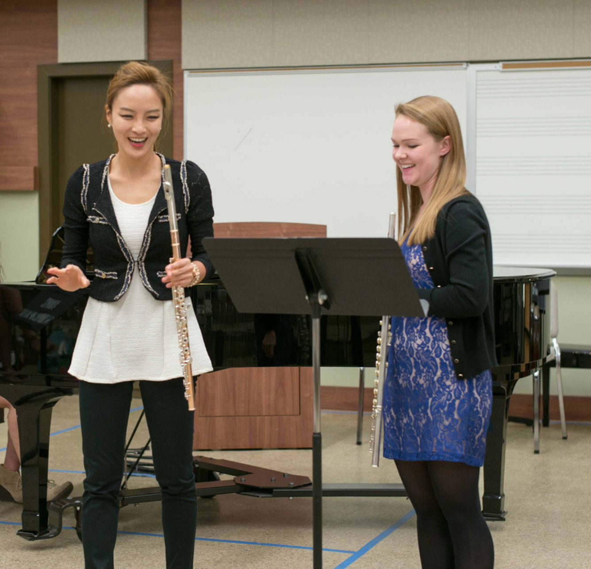March 2015
I had the opportunity to perform in a masterclass for Jasmine Choi while she was in Miami! I performed the exposition from Mozart's Concerto in D. I've always admired Ms. Choi's playing, and it was such a treat to finally meet and work with her. She was so kind, encouraging, and funny! I learned a lot from working with her and by listening to her instruct my other studio members.
Go to Top of Page